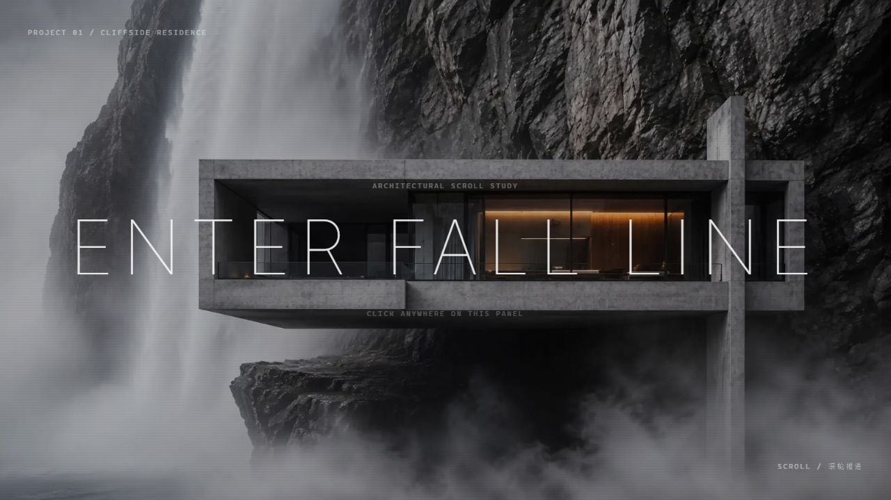
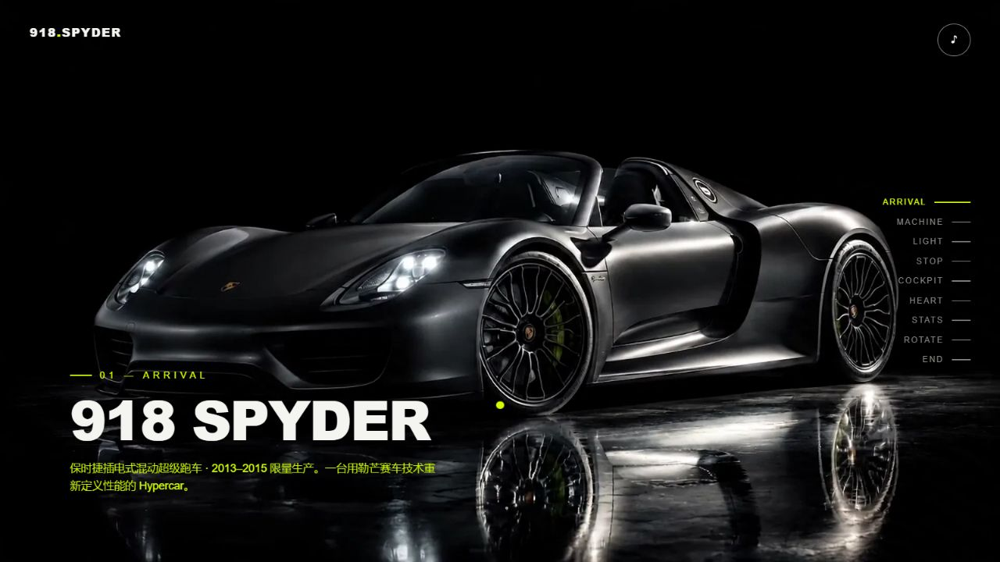
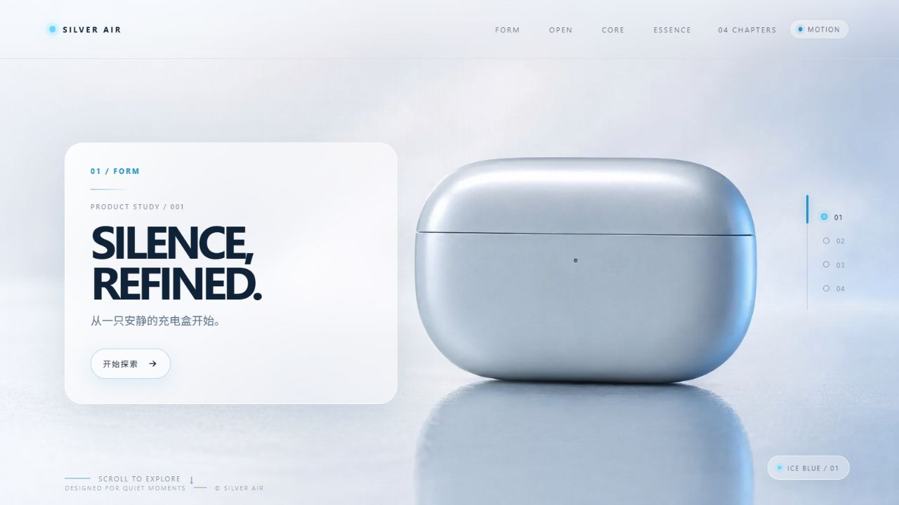
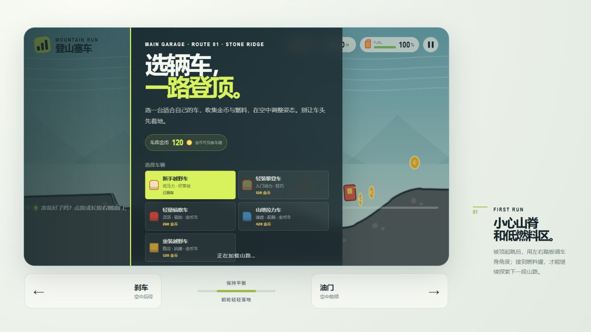
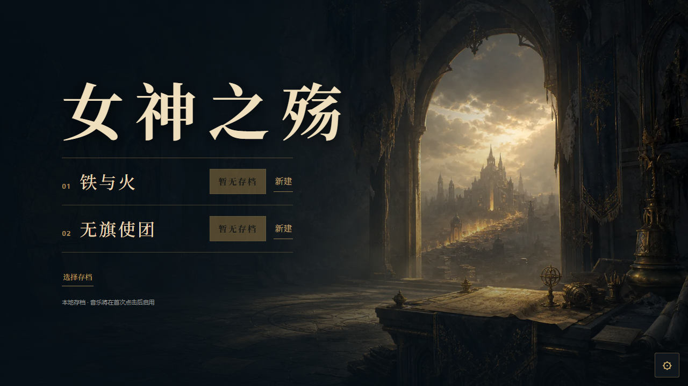

产品、空间，以及可以参与的体验。
五个网站作品，一份持续更新的选集。点击画面，走进每个项目。

建筑空间 / FALL LINE HOUSE

产品展示 / AUTOMOTIVE

产品展示 / AUDIO
从观看，到参与。

游戏体验 / H5 GAME
在神迹、战争与人的记忆之间。

游戏体验 / TACTICAL RPG
这里收录产品展示、建筑空间与游戏体验三个方向的网站作品。每个项目都可以打开，亲自体验。
个人介绍与各项目的具体贡献说明，待补充。
制作过程与具体个人贡献待补充。